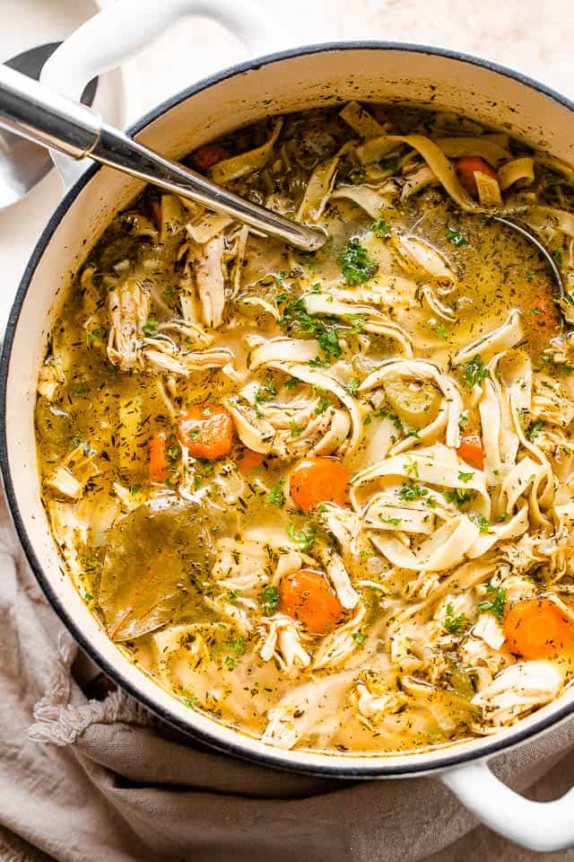

Chicken Noodle Soup

Description
Every time I start to think about this soup, I want to make it. Classic chicken noodle soup is pure comfort food. Thankfully, our recipe is so easy you can even make it tonight! Chicken noodle soup is one of the easiest soups to make. The ingredients are simple and inexpensive. You are looking at about 40 minutes from start to finish for this soup. Not too bad, especially when 20 minutes of that time is hands-off!
Ingredients
- 900ml chicken or vegetable stock (or Miso soup mix)
- 1 boneless, skinless chicken breast (about 175g)
- 1 tsp chopped fresh ginger
- 1 garlic clove, finely chopped
- 50g rice or wheat noodles
- 2 tbsp sweetcorn, canned or frozen
- 2-3 mushrooms, thinly sliced
- 2 spring onions, shredded
- 2 tsp soy sauce, plus extra for serving
- mint or basil leaves and a little shredded chilli (optional), to serve
Steps
- Pour the stock into a pan and add the chicken breast, ginger and garlic. Bring to the boil, then reduce the heat, partly cover and simmer for 20 mins, until the chicken is tender.
- Put the chicken on a board and shred into bite-size pieces using a couple of forks. Return the chicken to the stock with the noodles, sweetcorn, mushrooms, spring onion and soy sauce. Simmer for 3-4 mins until the noodles are tender.
- Ladle into two bowls and scatter over the remaining spring onion, mint or basil leaves and chilli, if using. Serve with extra soy sauce.